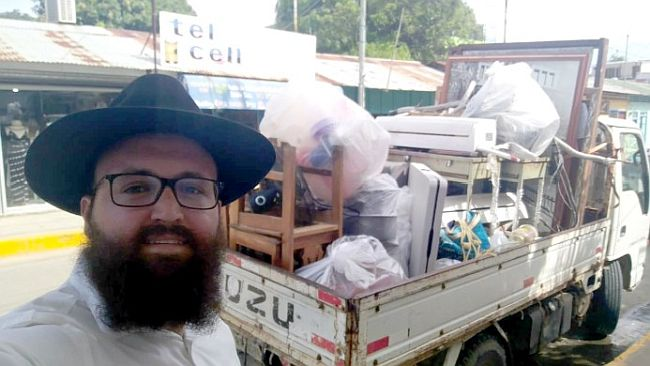

Nicaragua Chabad House Closed
Due to the intense hostilities that broke out in Nicaragua in recent months, the country has become dangerous, hovering on the brink of civil war. “It has become scary here,” says the shliach in S. Juan del Sur, Rabbi Dovid Attar, who had to close the Chabad House and hurriedly leave the country. “I

“We hope that the situation will improve very quickly, but it doesn’t look like it is going in that direction; things are just getting worse. In order to protect our family and the Jews who live here, we are compelled to tell people to stop coming and help all who are here who want to leave Nicaragua.
“We celebrated Shabbos together here in Nicaragua but right after Shabbos, we told everyone to leave, and we also have to get out. We must leave Nicaragua now.
“We have three small children, under the age of five, my wife and I, two sifrei Torah and other precious belongings. We turn to you for help to get people out to Eretz Yisroel.” End of message.
• • •
We aren’t used to getting messages like this from a shliach of the Rebbe. We are used to hearing from shluchim about how they overcame all obstacles. Most stories from shluchim have a happy ending.
This urgent message tells of the mesirus nefesh of the shluchim and about the danger in their place of shlichus.
I spoke with Rabbi Dovid Attar, shliach in S. Juan del Sur in Nicaragua, to hear what’s going on. Since he sent that message, he and his family are in Eretz Yisroel where they are tensely following the events in Nicaragua. They hired some young people to guard the Chabad House building. “The last thing we want is for the place to be looted,” he said.
MOSHIACH IN S. JUAN DEL SUR
“Up until recent years, S. Juan del Sur was a quiet fishing village,” says R’ Attar. Then the town changed and hotels were opened as well as many attractions for tourists. “For many tourists, the village was a place to relax for a few days before trekking in the volcanic mountains, or to rest up from those hikes before continuing on their way. We were their home base.”
Israelis discovered Nicaragua about ten years ago. It’s one of the most beautiful countries in Central America. Since then, the numbers of tourists grew and grew. Today, over 10,000 Israelis go there every year.
“There are extraordinary scenic sights and outstanding surfing areas. It’s a paradise. The number of Israeli tourists has grown from year to year.”
Until six and a half years ago, the place lacked a Chabad presence. R’ Attar and his wife took on the challenge as part of the shlichus revolution in tourist villages in South and Central America. They founded a gem of a Jewish way station, a lighthouse from which they spread the wellsprings and the Besuras HaGeula. R’ Attar has a large building with a shul, a kosher restaurant, catering, Shabbos and Yom Tov meals, shiurim, and many one-on-one activities with tourists who are first becoming acquainted with Torah.
“The Chabad House has the only full-time operating shul in the entire country.”
The Chabad House serves as a Jewish point of light along with another Chabad House that was founded in Managua. R’ Attar shechts chickens every few weeks. Many Jews benefit from this; not just the tourists and visitors to the Chabad House. Every few weeks, R’ Attar travels to the nearby village to oversee Chalav Yisroel. The Chabad House is the home of all the tourists who can set down their backpacks upon their arrival at the village, enjoy a hot drink and a good meal, and are given a brochure with discounts that the shluchim were able to arrange with the hotels.
“At the Chabad House there are regular shiurim and t’fillos. At every Shabbos meal there are touching moments. One of the most moving things is seeing how ‘one shliach makes another shliach’ comes to life here. Tourists who just learned about t’fillin or other mitzvos explain it to other tourists. We see Am Yisroel Chai and great faith.”
OUT OF CONTROL SITUATION
Three months ago, the serenity gave way to out of control riots. It started with demonstrations by thousands of elderly people in the north of the country who protested the cutting of their stipends. This led to President Ortega’s using the police to quell the protests with vast military and police force. As a result, some seniors were killed and many more were injured which caused young people, mainly thousands of students, to join the wave of protests. They called on the government to conduct democratic elections and for the president to resign.
“The rioting increased,” says R’ Attar. “At first, it was still possible to operate freely in the country, and tourists, including Israelis, were not harmed. But as the days passed, the protests grew more violent which greatly affected the personal security of many civilians and tourists to the point that they couldn’t go out freely at night on the street. The soldiers shot at the protesters. It turned into a civil war in which civilians were armed and shot back at the soldiers.”
During the first days of protest, 62 students were killed, with the emphasis on students, in light of the police’s claim that they are the source of the agitation. In one of the major events, dozens of policemen entered a big university in Managua, the capitol, and began arresting students. If someone said a word he was beaten and even shot at. That evening ended with 13 dead at the university. This led to uprisings in every city in the country.
One of the tourists who witnessed the goings-on, Yoni Gal, told Beis Moshiach about the sensitive situation:
“From the moment the riots began, we closeted ourselves in our hotel and guest houses in fear they would attack us or rob us. It came as a complete surprise. We thought that after a day or two the protests would stop, but in the end we had to leave the country. There were instances in which bullets whizzed by us and we got the hint … Many tourists like us left the country over the border with Costa Rica and continued touring there or in Guatemala.”
In recent weeks, the security situation has worsened. Food is non-obtainable and over 150 people have been killed in demonstrations. The roads to the capital have been blocked by demonstrators and gas stations are closed.
R’ Attar warns Israeli tourists not to enter the country because there is significant danger to life. In several recent incidents, Israeli tourists were robbed when they left their hotels at night. They were beaten and their cell phones and money were taken by masked men.
“Almost all the food in the country is gone. The situation is dangerous and intolerable. People are shooting at one another. You don’t know who is against whom. I decided it is too dangerous for my family. We decided to leave the country until the situation stabilizes.”
The shluchim closed the two Chabad Houses and hired locals to guard their property.
“We started two shuls, a mikva, and invested a lot of money, but for now we have put our work on hold. On social media I instructed Israelis not to go to Nicaragua.”
R’ Attar himself escaped with his family into Costa Rica and from there travelled to Eretz Yisroel.
“President Ortega wants to turn the country into another Venezuela, which means the protesting won’t stop and the ones who will pay the price are the civilians and the tourism of the country.
“But ours plans are to return as soon as possible, when the situation calms down, and to complete our work in preparing the place for Moshiach.”
Beis Moshiach. "Nicaragua Chabad House Closed." Beis Moshiach, no. 1127 (July 18, 2018).